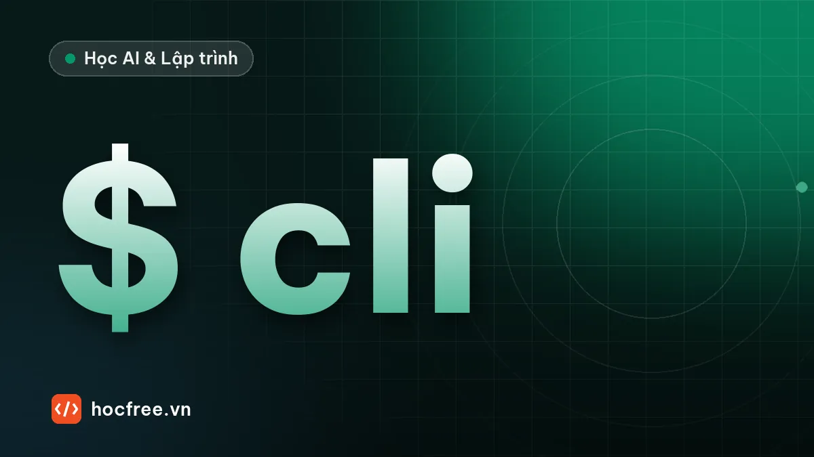

Viết công cụ dòng lệnh Python với argparse và Typer
Biến script thành công cụ dòng lệnh: argparse với tham số, tùy chọn, cờ, lệnh con, mã thoát, rồi viết lại gọn hơn bằng Typer.

Học xong bài này, bạn sẽ
- Nhận tham số, tùy chọn, cờ từ dòng lệnh
- Viết lệnh con và trợ giúp --help
- Dùng Typer viết CLI bằng type hint
Nên học trước: Cấu trúc dự án chuẩn và đóng gói thành lệnh
Nội dung bài viết
Script hỏi bằng input() thì không chạy tự động được: không ai ngồi gõ trả lời lúc 2 giờ sáng. Công cụ chuyên nghiệp nhận mọi thứ qua tham số dòng lệnh: dem_tu bao_cao.txt --top 5. Cách này chạy được trong lịch tự động, trong script khác, trong CI, và có sẵn trang trợ giúp --help. Bài này dạy argparse (có sẵn trong Python) và Typer (thư viện viết CLI bằng type hint).
1. sys.argv: tham số thô
import sys
print(sys.argv)$ python tham_so.py bao_cao.txt --top 5
['tham_so.py', 'bao_cao.txt', '--top', '5']sys.argv là list chuỗi: phần tử đầu là tên script, sau đó là các tham số tách theo dấu cách. Tự phân tích list này nhanh chóng trở nên rối: tham số tùy chọn, giá trị mặc định, kiểm tra kiểu, thông báo lỗi, trang trợ giúp. argparse làm hết những việc đó.
2. argparse cơ bản
import argparse
import re
from collections import Counter
from pathlib import Path
def tao_parser() -> argparse.ArgumentParser:
p = argparse.ArgumentParser(prog="dem-tu", description="Đếm từ xuất hiện nhiều nhất trong file văn bản.")
p.add_argument("file", type=Path, help="file văn bản UTF-8") # bắt buộc, theo vị trí
p.add_argument("-n", "--top", type=int, default=10, help="số từ in ra (mặc định: %(default)s)")
p.add_argument("--phan-biet-hoa", action="store_true", help="phân biệt chữ hoa, thường") # cờ
p.add_argument("--dinh-dang", choices=["bang", "csv"], default="bang")
return p
def main(argv: list[str] | None = None) -> int:
args = tao_parser().parse_args(argv)
if not args.file.is_file():
print(f"Không tìm thấy file: {args.file}")
return 1
van_ban = args.file.read_text(encoding="utf-8")
if not args.phan_biet_hoa:
van_ban = van_ban.lower()
dem = Counter(re.findall(r"\w+", van_ban))
for tu, so in dem.most_common(args.top):
print(f"{tu},{so}" if args.dinh_dang == "csv" else f"{tu:<10}{so:>4}")
return 0
Path("bai.txt").write_text("Python dễ học. Học Python, dùng Python mỗi ngày!", encoding="utf-8")
main(["bai.txt", "--top", "2"])
main(["bai.txt", "-n", "2", "--phan-biet-hoa", "--dinh-dang", "csv"])python 3
học 2
Python,3
dễ,1- Tham số không có dấu gạch (
"file") là bắt buộc, xác định theo vị trí. - Tham số bắt đầu bằng
-/--là tùy chọn; có thể có tên ngắn (-n) và tên dài (--top). type=int,type=Pathtự chuyển kiểu và báo lỗi nếu sai;choicesgiới hạn giá trị;action="store_true"tạo cờ bật/tắt.- Tên có gạch ngang
--phan-biet-hoathành thuộc tínhargs.phan_biet_hoa. main(argv=None): khi chạy thật,parse_args(None)đọcsys.argv; khi test, truyền list tham số vào. Cùng mẫu với dự án dọn thư mục ở chặng 3.
Thêm ở cuối file if __name__ == "__main__": sys.exit(main()), và argparse tặng bạn trang trợ giúp cùng thông báo lỗi miễn phí:
$ python dem_tu.py --help
usage: dem-tu [-h] [-n TOP] [--phan-biet-hoa] [--dinh-dang {bang,csv}] file
Đếm từ xuất hiện nhiều nhất trong file văn bản.
positional arguments:
file file văn bản UTF-8
options:
-h, --help show this help message and exit
-n, --top TOP số từ in ra (mặc định: 10)
--phan-biet-hoa phân biệt chữ hoa, thường
--dinh-dang {bang,csv}
$ python dem_tu.py bai.txt --top muoi
usage: dem-tu [-h] [-n TOP] [--phan-biet-hoa] [--dinh-dang {bang,csv}] file
dem-tu: error: argument -n/--top: invalid int value: 'muoi'3. Mã thoát
Mọi chương trình dòng lệnh trả về một mã thoát (exit code): 0 là thành công, khác 0 là lỗi. argparse thoát với mã 2 khi tham số sai. Trả mã đúng giúp script khác, lịch chạy tự động và CI biết lần chạy có thành công không:
$ python dem_tu.py khong_co.txt; echo $? (PowerShell: echo $LASTEXITCODE)
Không tìm thấy file: khong_co.txt
1Thông báo lỗi nên in ra stderr (print(..., file=sys.stderr)) để không lẫn với kết quả khi người dùng chuyển hướng output vào file bằng >.
4. Lệnh con
Công cụ lớn như git có lệnh con: git commit, git push. argparse làm được bằng add_subparsers:
import argparse
p = argparse.ArgumentParser(prog="chi-tieu")
lenh = p.add_subparsers(dest="lenh", required=True)
them = lenh.add_parser("them", help="thêm khoản chi")
them.add_argument("so_tien", type=int)
them.add_argument("-d", "--danh-muc", default="khác")
lenh.add_parser("bao-cao", help="in báo cáo")
for argv in (["them", "45000", "-d", "ăn uống"], ["bao-cao"]):
args = p.parse_args(argv)
print(vars(args)){'lenh': 'them', 'so_tien': 45000, 'danh_muc': 'ăn uống'}
{'lenh': 'bao-cao'}5. Typer: CLI từ type hint
Typer (cùng tác giả với FastAPI) đọc type hint của hàm để tự sinh tham số, kiểm tra kiểu và trang trợ giúp có màu. Cài: uv add typer.
# (minh họa) dem_tu_typer.py, cần: uv add typer
import re
from collections import Counter
from pathlib import Path
from typing import Annotated
import typer
app = typer.Typer(help="Công cụ xử lý văn bản.")
def _dem(file: Path, phan_biet_hoa: bool) -> Counter:
van_ban = file.read_text(encoding="utf-8")
return Counter(re.findall(r"\w+", van_ban if phan_biet_hoa else van_ban.lower()))
@app.command()
def dem(
file: Annotated[Path, typer.Argument(exists=True, dir_okay=False, help="File văn bản UTF-8")],
top: Annotated[int, typer.Option("--top", "-n", min=1, help="Số từ in ra")] = 10,
phan_biet_hoa: bool = False,
) -> None:
"""Đếm từ xuất hiện nhiều nhất."""
for tu, so in _dem(file, phan_biet_hoa).most_common(top):
typer.echo(f"{tu:<10}{so:>4}")
@app.command()
def tim(file: Path, tu_khoa: str) -> None:
"""In các dòng chứa từ khóa, kèm số dòng."""
for i, dong in enumerate(file.read_text(encoding="utf-8").splitlines(), 1):
if tu_khoa.lower() in dong.lower():
typer.echo(f"{i}: {dong}")
if __name__ == "__main__":
app()$ python dem_tu_typer.py dem bai.txt -n 2
python 3
học 2
$ python dem_tu_typer.py tim bai.txt "mỗi ngày"
1: Python dễ học. Học Python, dùng Python mỗi ngày!
$ python dem_tu_typer.py dem bai.txt --top 0
Usage: dem_tu_typer.py dem [OPTIONS] {file}
Try 'dem_tu_typer.py dem --help' for help.
┌─ Error ────────────────────────────────────────────────────────────────┐
│ Invalid value for '--top' / '-n': 0 is not in the range x>=1. │
└────────────────────────────────────────────────────────────────────────┘- Tham số không có giá trị mặc định thành tham số bắt buộc; có mặc định thành tùy chọn
--ten. Kiểuboolthành cặp cờ--phan-biet-hoa/--no-phan-biet-hoa. Annotated[...]gắn thêm kiểm tra (exists=True,min=1) và lời trợ giúp; docstring thành mô tả lệnh.- Mỗi hàm có
@app.command()là một lệnh con.
Tóm tắt
argparse: tham số vị trí, tùy chọn-n/--top,type,default,choices,store_true, lệnh con.main(argv=None)trả mã thoát;sys.exit(main()); lỗi in rastderr.- Typer: hàm + type hint thành lệnh;
Annotated+typer.Option/Argumentđể kiểm tra, trợ giúp.
Bài tập
Bài 1. Công cụ đếm từ
Hoàn thiện dem_tu.py ở mục 2 thành file chạy được từ terminal, thêm tùy chọn --bo-qua nhận nhiều từ cần bỏ qua (ví dụ --bo-qua và là của).
Xem đáp án
import argparse
import re
from collections import Counter
p = argparse.ArgumentParser(prog="dem-tu")
p.add_argument("--bo-qua", nargs="*", default=[], help="các từ bỏ qua")
p.add_argument("-n", "--top", type=int, default=3)
args = p.parse_args(["--bo-qua", "và", "là", "-n", "2"])
van_ban = "Python là ngôn ngữ dễ học và mạnh. Python và Go là hai ngôn ngữ phổ biến."
bo_qua = {t.lower() for t in args.bo_qua}
dem = Counter(t for t in re.findall(r"\w+", van_ban.lower()) if t not in bo_qua)
print(dem.most_common(args.top))[('python', 2), ('ngôn', 2)]nargs="*" nhận 0 hoặc nhiều giá trị thành list; nargs="+" bắt buộc ít nhất một. Khi dùng thật, thay list trong parse_args([...]) bằng parse_args().
Bài 2. Viết lại bằng Typer
Viết lại công cụ bằng Typer với hai lệnh con dem và tim như mục 5, chạy thử cả hai lệnh và --help.
Xem gợi ý
Dùng nguyên mã ở mục 5. Chạy python dem_tu_typer.py --help để thấy danh sách lệnh con kèm mô tả lấy từ docstring, và python dem_tu_typer.py dem --help để thấy trợ giúp của từng tham số. Thử truyền một file không tồn tại: exists=True làm Typer báo lỗi trước khi hàm của bạn chạy.
Nguồn tham khảo: argparse; Argparse Tutorial; Typer: Tutorial.
Bài tập thực hành
- Viết công cụ dem_tu.py nhận đường dẫn file, tùy chọn --top N và cờ --phan-biet-hoa.
- Viết lại công cụ trên bằng Typer với hai lệnh con dem và tim.
Làm xong bài tập mới chuyển sang bài tiếp theo: tự viết code là cách duy nhất để nhớ lâu.